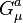

The Standard Model of particle physics is a theory concerning the electromagnetic, weak, and strong nuclear interactions, which mediate the dynamics of the known subatomic particles. It was developed throughout the latter half of the 20th century, as a collaborative effort of scientists around the world. The current formulation was finalized in the mid-1970s upon experimental confirmation of the existence of quarks. Since then, discoveries of the top quark (1995), the tau neutrino (2000), and more recently the Higgs boson (2013), have given further credence to the Standard Model. Because of its success in explaining a wide variety of experimental results, the Standard Model is sometimes regarded as a "theory of almost everything".
The Standard Model falls short of being a complete theory of fundamental interactions. It does not incorporate the full theory of gravitation as described by general relativity, or account for the accelerating expansion of the universe (as possibly described by dark energy). The model does not contain any viable dark matter particle that possesses all of the required properties deduced from observational cosmology. It also does not incorporate neutrino oscillations (and their non-zero masses). Although the Standard Model is believed to be theoretically self-consistent and has demonstrated huge and continued successes in providing experimental predictions, it does leave some phenomena unexplained.
The development of the Standard Model was driven by theoretical and experimental particle physicists alike. For theorists, the Standard Model is a paradigm of a quantum field theory, which exhibits a wide range of physics including spontaneous symmetry breaking, anomalies, non-perturbative behavior, etc. It is used as a basis for building more exotic models that incorporate hypothetical particles, extra dimensions, and elaborate symmetries (such as supersymmetry) in an attempt to explain experimental results at variance with the Standard Model, such as the existence of dark matter and neutrino oscillations.

At present, matter and energy are best understood in terms of the kinematics and interactions of elementary particles. To date, physics has reduced the laws governing the behavior and interaction of all known forms of matter and energy to a small set of fundamental laws and theories. A major goal of physics is to find the "common ground" that would unite all of these theories into one integrated theory of everything, of which all the other known laws would be special cases, and from which the behavior of all matter and energy could be derived (at least in principle).
The first step towards the Standard Model was Sheldon Glashow's discovery in 1961 of a way to combine the electromagnetic and weak interactions. In 1967 Steven Weinberg and Abdus Salam incorporated the Higgs mechanism into Glashow's electroweak theory, giving it its modern form.
The Higgs mechanism is believed to give rise to the masses of all the elementary particles in the Standard Model. This includes the masses of the W and Z bosons, and the masses of the fermions, i.e. the quarks and leptons.
After the neutral weak currents caused by Z boson exchange were discovered at CERN in 1973, the electroweak theory became widely accepted and Glashow, Salam, and Weinberg shared the 1979 Nobel Prize in Physics for discovering it. The W and Z bosons were discovered experimentally in 1981, and their masses were found to be as the Standard Model predicted.
The theory of the strong interaction, to which many contributed, acquired its modern form around 1973–74, when experiments confirmed that the hadrons were composed of fractionally charged quarks.
The Standard Model includes members of several classes of elementary particles (fermions, gauge bosons, and the Higgs boson), which in turn can be distinguished by other characteristics, such as color charge.
Counting particles by a rule that distinguishes between particles and their corresponding antiparticles, and among the many color states of quarks and gluons, gives a total of 61 elementary particles.
| *** | Types | Generations | Antiparticle | Colors | Total |
| Quarks | 2 | 3 | Pair | 3 | 36 |
| Leptons | 2 | 3 | Pair | None | 12 |
| Gluons | 1 | 1 | Own | 8 | 8 |
| W | 1 | 1 | Pair | None | 2 |
| Z | 1 | 1 | Own | None | 1 |
| Photon | 1 | 1 | Own | None | 1 |
| Higgs | 1 | 1 | Own | None | 1 |
| Total 61 |
The pattern of weak isospin, T3, weak hypercharge, YW, and color charge of all known elementary particles, rotated by the weak mixing angle to show electric charge, Q, roughly along the vertical. The neutral Higgs field (gray square) breaks the electroweak symmetry and interacts with other particles to give them mass.
The Standard Model includes 12 elementary particles of spin-½ known as fermions. According to the spin-statistics theorem, fermions respect the Pauli exclusion principle. Each fermion has a corresponding antiparticle.
The fermions of the Standard Model are classified according to how they interact (or equivalently, by what charges they carry). There are six quarks (up, down, charm, strange, top, bottom), and six leptons (electron, electron neutrino, muon, muon neutrino, tau, tau neutrino). Pairs from each classification are grouped together to form a generation, with corresponding particles exhibiting similar physical behavior (see table).
The defining property of the quarks is that they carry color charge, and hence, interact via the strong interaction. A phenomenon called color confinement results in quarks being perpetually (or at least since very soon after the start of the Big Bang) bound to one another, forming color-neutral composite particles (hadrons) containing either a quark and an antiquark (mesons) or three quarks (baryons). The familiar proton and the neutron are the two baryons having the smallest mass. Quarks also carry electric charge and weak isospin. Hence they interact with other fermions both electromagnetically and via the weak interaction.
The remaining six fermions do not carry colour charge and are called leptons. The three neutrinos do not carry electric charge either, so their motion is directly influenced only by the weak nuclear force, which makes them notoriously difficult to detect. However, by virtue of carrying an electric charge, the electron, muon, and tau all interact electromagnetically.
Each member of a generation has greater mass than the corresponding particles of lower generations. The first generation charged particles do not decay; hence all ordinary (baryonic) matter is made of such particles. Specifically, all atoms consist of electrons orbiting atomic nuclei ultimately constituted of up and down quarks. Second and third generations charged particles, on the other hand, decay with very short half lives, and are observed only in very high-energy environments. Neutrinos of all generations also do not decay, and pervade the universe, but rarely interact with baryonic matter.
The above interactions form the basis of the standard model. Feynman diagrams in the standard model are built from these vertices. Modifications involving Higgs boson interactions and neutrino oscillations are omitted. The charge of the W bosons is dictated by the fermions they interact with; the conjugate of each listed vertex (i.e. reversing the direction of arrows) is also allowed.
In the Standard Model, gauge bosons are defined as force carriers that mediate the strong, weak, and electromagnetic fundamental interactions.
Interactions in physics are the ways that particles influence other particles. At a macroscopic level, electromagnetism allows particles to interact with one another via electric and magnetic fields, and gravitation allows particles with mass to attract one another in accordance with Einstein's theory of general relativity. The Standard Model explains such forces as resulting from matter particles exchanging other particles, known as force mediating particles (strictly speaking, this is only so if interpreting literally what is actually an approximation method known as perturbation theory). When a force-mediating particle is exchanged, at a macroscopic level the effect is equivalent to a force influencing both of them, and the particle is therefore said to have mediated (i.e., been the agent of) that force. The Feynman diagram calculations, which are a graphical representation of the perturbation theory approximation, invoke "force mediating particles", and when applied to analyze high-energy scattering experiments are in reasonable agreement with the data. However, perturbation theory (and with it the concept of a "force-mediating particle") fails in other situations. These include low-energy quantum chromodynamics, bound states, and solitons.
The gauge bosons of the Standard Model all have spin (as do matter particles). The value of the spin is 1, making them bosons. As a result, they do not follow the Pauli exclusion principle that constrains fermions: thus bosons (e.g. photons) do not have a theoretical limit on their spatial density (number per volume). The different types of gauge bosons are described below.
Photons mediate the electromagnetic force between electrically charged particles. The photon is massless and is well-described by the theory of quantum electrodynamics. The W+, W-, and Z gauge bosons mediate the weak interactions between particles of different flavors (all quarks and leptons). They are massive, with the Z being more massive than the W±. The weak interactions involving the W± exclusively act on left-handed particles and right-handed antiparticles. Furthermore, the W± carries an electric charge of +1 and -1 and couples to the electromagnetic interaction. The electrically neutral Z boson interacts with both left-handed particles and antiparticles. These three gauge bosons along with the photons are grouped together, as collectively mediating the electroweak interaction.
The eight gluons mediate the strong interactions between color charged particles (the quarks). Gluons are massless. The eightfold multiplicity of gluons is labeled by a combination of color and anticolor charge (e.g. red–antigreen). Because the gluons have an effective color charge, they can also interact among themselves. The gluons and their interactions are described by the theory of quantum chromodynamics.
The interactions between all the particles described by the Standard Model are summarized by the diagrams on the right of this section.
The Higgs particle is a massive scalar elementary particle theorized by Robert Brout, François Englert, Peter Higgs, Gerald Guralnik, C. R. Hagen, and Tom Kibble in 1964 (see 1964 PRL symmetry breaking papers) and is a key building block in the Standard Model. It has no intrinsic spin, and for that reason is classified as a boson (like the gauge bosons, which have integer spin).
The Higgs boson plays a unique role in the Standard Model, by explaining why the other elementary particles, except the photon and gluon, are massive. In particular, the Higgs boson explains why the photon has no mass, while the W and Z bosons are very heavy. Elementary particle masses, and the differences between electromagnetism (mediated by the photon) and the weak force (mediated by the W and Z bosons), are critical to many aspects of the structure of microscopic (and hence macroscopic) matter. In electroweak theory, the Higgs boson generates the masses of the leptons (electron, muon, and tau) and quarks. As the Higgs boson is massive, it must interact with itself.
Because the Higgs boson is a very massive particle and also decays almost immediately when created, only a very high-energy particle accelerator can observe and record it. Experiments to confirm and determine the nature of the Higgs boson using the Large Hadron Collider (LHC) at CERN began in early 2010, and were performed at Fermilab's Tevatron until its closure in late 2011. Mathematical consistency of the Standard Model requires that any mechanism capable of generating the masses of elementary particles become visible at energies above 1.4 TeV; therefore, the LHC (designed to collide two 7 to 8 TeV proton beams) was built to answer the question of whether the Higgs boson actually exists.
On 4 July 2012, the two main experiments at the LHC (ATLAS and CMS) both reported independently that they found a new particle with a mass of about 125 GeV/c2 (about 133 proton masses, on the order of 10-25 kg), which is "consistent with the Higgs boson." Although it has several properties similar to the predicted "simplest" Higgs, they acknowledged that further work would be needed to conclude that it is indeed the Higgs boson, and exactly which version of the Standard Model Higgs is best supported if confirmed.
On 14 March 2013 the Higgs Boson was tentatively confirmed to exist.
Technically, quantum field theory provides the mathematical framework for the Standard Model, in which a Lagrangian controls the dynamics and kinematics of the theory. Each kind of particle is described in terms of a dynamical field that pervades space-time. The construction of the Standard Model proceeds following the modern method of constructing most field theories: by first postulating a set of symmetries of the system, and then by writing down the most general renormalizable Lagrangian from its particle (field) content that observes these symmetries.
The global Poincaré symmetry is postulated for all relativistic quantum field theories. It consists of the familiar translational symmetry, rotational symmetry and the inertial reference frame invariance central to the theory of special relativity. The local SU(3)xSU(2)xU(1) gauge symmetry is an internal symmetry that essentially defines the Standard Model. Roughly, the three factors of the gauge symmetry give rise to the three fundamental interactions. The fields fall into different representations of the various symmetry groups of the Standard Model (see table). Upon writing the most general Lagrangian, one finds that the dynamics depend on 19 parameters, whose numerical values are established by experiment. The parameters are summarized in the table above (note: with the Higgs mass is at 125 GeV, the Higgs self-coupling strength λ ~ 1/8).
The quantum chromodynamics (QCD) sector defines the interactions between quarks and gluons, with SU(3) symmetry, generated by Ta. Since leptons do not interact with gluons, they are not affected by this sector. The Dirac Lagrangian of the quarks coupled to the gluon fields is given by
gauge field containing the gluons, are the Dirac matrices, D and U are the Dirac spinors associated with up- and down-type quarks, and gs is the strong coupling constant.
The electroweak sector is a Yang—Mills gauge theory with the simple symmetry group U(1)xSU(2)L
is the U(1) gauge field; YW is the weak hypercharge-the generator of the U(1) group; is the three-component SU(2) gauge field; gauge field;are the Pauli matrices–infinitesimal generators of the SU(2) group. The subscript L indicates that they only act on left fermions; g’ and g are coupling constants.
In the Standard Model, the Higgs field is a complex scalar of the group SU(2)L:
where the indices + and 0 indicate the electric charge (Q) of the components. The weak isospin (YW) of both components is 1.
Before symmetry breaking, the Higgs Lagrangian is:

which can also be written as:
This section needs additional citations for verification. Please help improve this article by adding citations to reliable sources. Unsourced material may be challenged and removed. (April 2008)
The Standard Model (SM) predicted the existence of the W and Z bosons, gluon, and the top and charm quarks before these particles were observed. Their predicted properties were experimentally confirmed with good precision. To give an idea of the success of the SM, the following table compares the measured masses of the W and Z bosons with the masses predicted by the SM:
| Quantity | Measured (GeV) | SM prediction (GeV) |
| Mass of W boson | 80.387 ± 0.019 | 80.390 ± 0.018 |
| Mass of Z boson | 91.1876 ± 0.0021 | 91.1874 ± 0.0021 |
The SM also makes several predictions about the decay of Z bosons, which have been experimentally confirmed by the Large Electron-Positron Collider at CERN.
In May 2012 BaBar Collaboration reported that their recently analyzed data may suggest possible flaws in the Standard Model of particle physics. These data show that a particular type of particle decay called "B to D-star-tau-nu" happens more often than the Standard Model says it should. In this type of decay, a particle called the B-bar meson decays into a D meson, an antineutrino and a tau-lepton. While the level of certainty of the excess (3.4 sigma) is not enough to claim a break from the Standard Model, the results are a potential sign of something amiss and are likely to impact existing theories, including those attempting to deduce the properties of Higgs bosons.
On December 13, 2012, physicists reported the constancy, over space and time, of a basic physical constant of nature that supports the standard model of physics. The scientists, studying methanol molecules in a distant galaxy, found the change (Δμ/μ) in the proton-to-electron mass ratio μ to be equal to "(0.0 ± 1.0) x 10-7 at redshift z = 0.89" and consistent with "a null result".
Self-consistency of the Standard Model (currently formulated as a non-abelian gauge theory quantized through path-integrals) has not been mathematically proven. While regularized versions useful for approximate computations (for example lattice gauge theory) exist, it is not known whether they converge (in the sense of S-matrix elements) in the limit that the regulator is removed. A key question related to the consistency is the Yang–Mills existence and mass gap problem.
Experiments indicate that neutrinos have mass, which the classic Standard Model did not allow. To accommodate this finding, the classic Standard Model can be modified to include neutrino mass.
If one insists on using only Standard Model particles, this can be achieved by adding a non-renormalizable interaction of leptons with the Higgs boson. On a fundamental level, such an interaction emerges in the seesaw mechanism where heavy right-handed neutrinos are added to the theory. This is natural in the left-right symmetric extension of the Standard Model and in certain grand unified theories. As long as new physics appears below or around 1014 GeV, the neutrino masses can be of the right order of magnitude.
Theoretical and experimental research has attempted to extend the Standard Model into a Unified field theory or a Theory of everything, a complete theory explaining all physical phenomena including constants. Inadequacies of the Standard Model that motivate such research include:
It does not attempt to explain gravitation, although a theoretical particle known as a graviton would help explain it, and unlike for the strong and electroweak interactions of the Standard Model, there is no known way of describing general relativity, the canonical theory of gravitation, consistently in terms of quantum field theory. The reason for this is, among other things, that quantum field theories of gravity generally break down before reaching the Planck scale. As a consequence, we have no reliable theory for the very early universe;
Some consider it to be ad hoc and inelegant, requiring 19 numerical constants whose values are unrelated and arbitrary. Although the Standard Model, as it now stands, can explain why neutrinos have masses, the specifics of neutrino mass are still unclear. It is believed that explaining neutrino mass will require an additional 7 or 8 constants, which are also arbitrary parameters;
The Higgs mechanism gives rise to the hierarchy problem if some new physics (coupled to the Higgs) is present at high energy scales. In these cases in order for the weak scale to be much smaller than the Planck scale, severe fine tuning of the parameters is required; there are, however, other scenarios that include quantum gravity in which such fine tuning can be avoided.
It should be modified so as to be consistent with the emerging "Standard Model of cosmology." In particular, the Standard Model cannot explain the observed amount of cold dark matter (CDM) and gives contributions to dark energy which are many orders of magnitude too large. It is also difficult to accommodate the observed predominance of matter over antimatter (matter/antimatter asymmetry). The isotropy and homogeneity of the visible universe over large distances seems to require a mechanism like cosmic inflation, which would also constitute an extension of the Standard Model.
Currently, no proposed Theory of Everything has been widely accepted or verified.